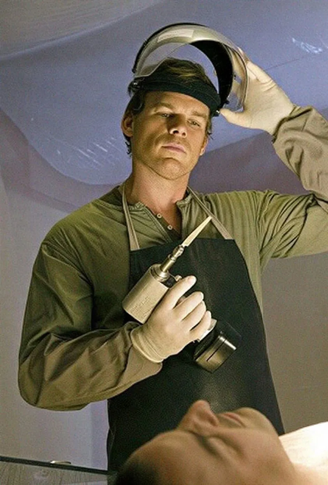
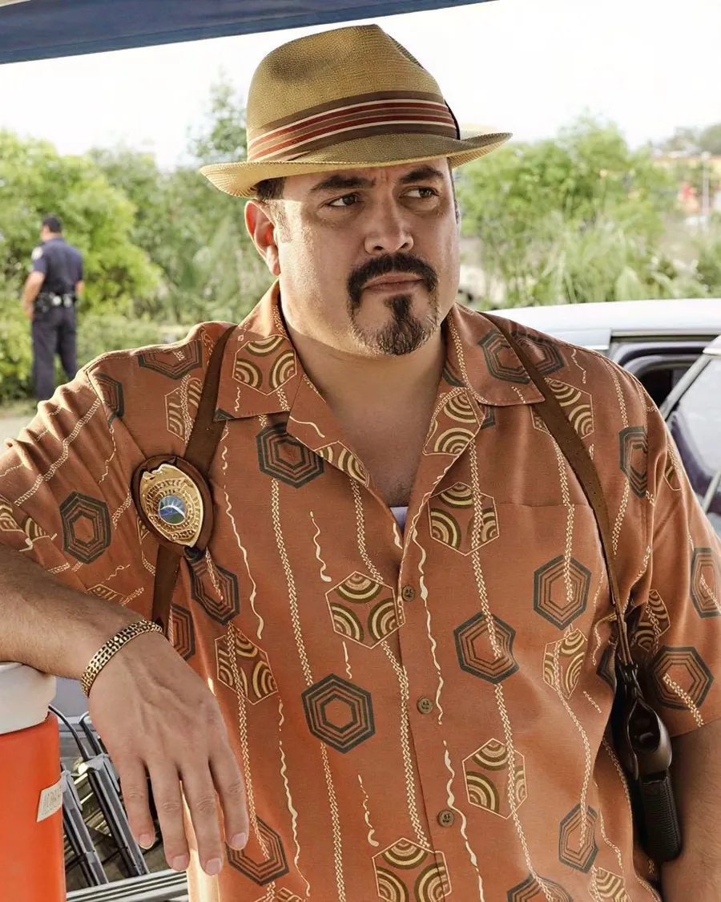
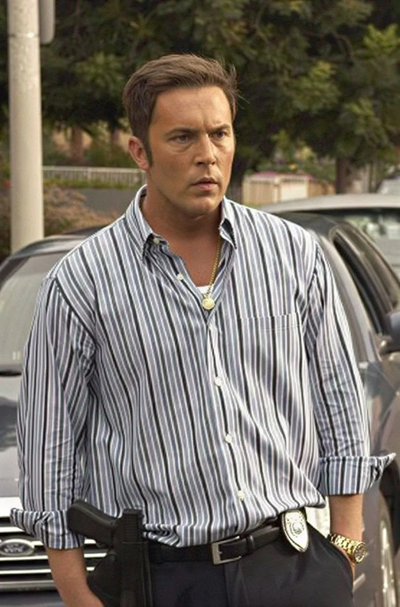

Dexter Kills

Esta é a noite.
168
Vítimas do Passageiro Sombrio
Eles achavam que ninguém estava olhando. Alguém estava.
Os personagens
-
Dexter Morgan
Analista de respingos de sangue da polícia de Miami de dia. À noite, segue o Código de Harry e caça quem escapou da justiça.
-
Debra Morgan
A irmã adotiva. Detetive teimosa, boca suja e coração enorme, a última pessoa que deveria descobrir quem o irmão é.
-
James Doakes
O sargento que nunca confiou no sorriso de Dexter. Foi o primeiro a sentir que havia algo de errado.
-
Rita Morgan
A namorada frágil que virou esposa. Ao lado dela, Dexter aprendeu a fingir uma vida normal, até quase acreditar nela.
-
Maria LaGuerta
A tenente ambiciosa da Homicídios. Política até o osso, sabe jogar o jogo do departamento como ninguém.
-
Angel Batista
O detetive de bom coração e chapéu sempre a postos. O colega mais leal que Dexter teve na delegacia.
-
Joey Quinn
Detetive charmoso e desconfiado, com faro para encrenca e um histórico nem sempre limpo.
-
Vince Masuka
O perito forense das piadas inconvenientes. Brilhante no laboratório, impossível fora dele.


